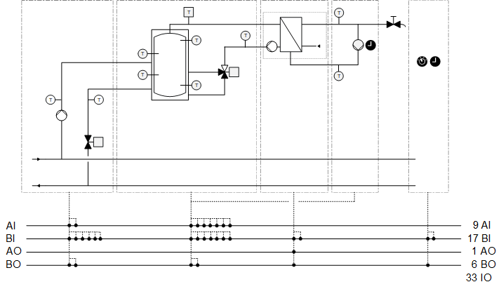
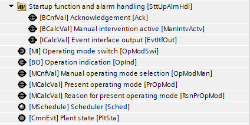
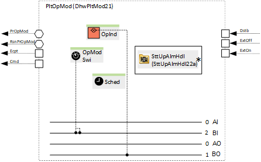
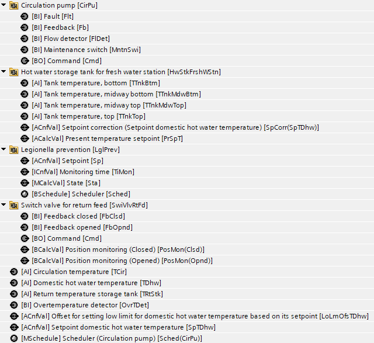
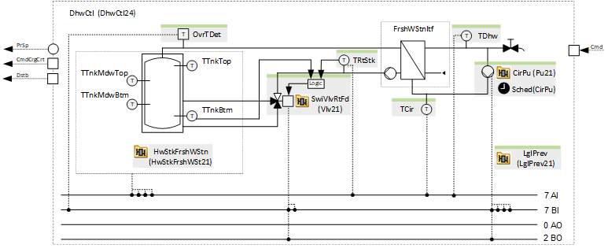
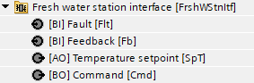
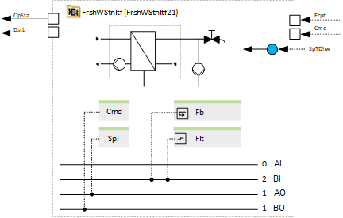

[Dhw24x] Domestic hot water, storage tank charge, fresh water station
Name: [Dhw24x] Domestic hot water, storage tank charge, fresh water station
Library hierarchy: Plants
Plant operating modes
- Off
- On
Plant diagram

Main functions | Main components |
|---|---|
|
|
Functional description
Operating mode determination
The domestic hot water plant can be switched on via a scheduler, by selecting an operating mode manually or by operating mode switch.
Domestic hot water temperature setpoint: | 63 °C |
Storage tank setpoint: | Hot water setpoint + 2 K |
Offset for setting a low limit on the domestic hot water temperature based on its setpoint: | - 5 K |
Control and monitoring of fresh water station
The fresh water station remains active throughout the entire system operation. Multiple fresh water stations with multiple interfaces can be connected to one heating storage tank.
Temperature monitoring
Monitor temperatures to ensure that they do not exceed limit values.
Alarm domestic hot water temperature sensor Function: HiLm = Plant disturbed & stop, LoLm = Monitoring | HiLm = 75 °C LoLm = 58 °C TiMonDvn = 00:00:30 |
Alarm settings circulation temperature sensor Function: HiLm = Plant disturbed & stop, LoLm = Monitoring | HiLm = 75 °C LoLm = 55 °C TiMonDvn = 00:00:30 |
Alarm settings tank temperature sensors Function: HiLm = Plant disturbed & stop, LoLm = Monitoring | HiLm = 100 °C LoLm = 0 °C TiMonDvn = 00:00:00 |
Switch valve for return feed
The return temperature storage tank is compared with the minimum temperature of the hot water storage tank. If the return temperature is lower, the valve switches and feeds the water into the lower part of the storage tank.
Program blocks
Plant operating mode | |
[DhwPltMod21] Plant operating mode determination for domestic hot water | |
 |  |
Charge circuit | |
[DhwCrgCrt24] Domestic hot water, charge circuit, no control | |
|
|
Sensors, setpoints and control | |
[DhwCtl24] Sensors, setpoints and control for DHW fresh water station | |
 |  |
Fresh water station interface (Optional) | |
 |  |